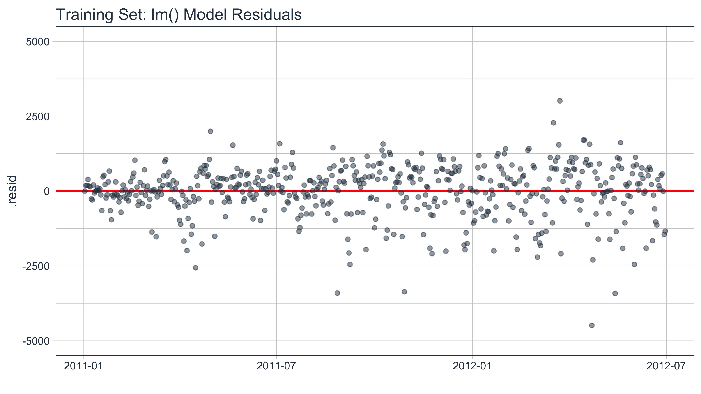
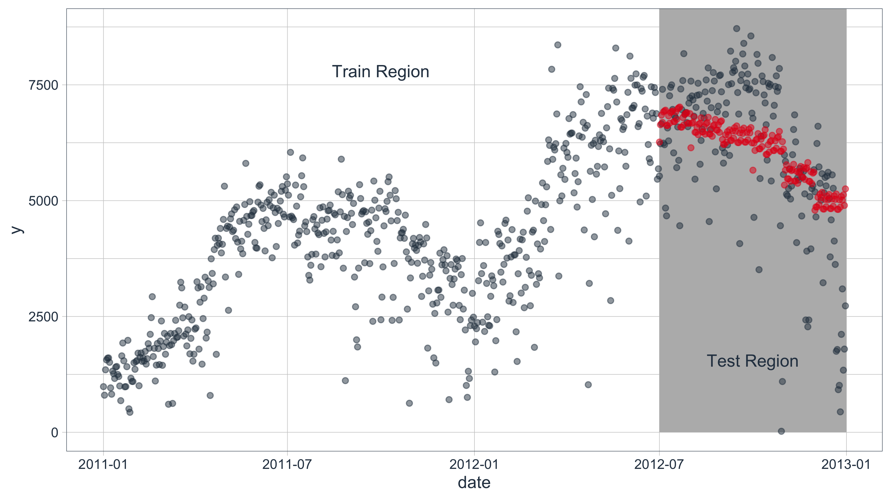
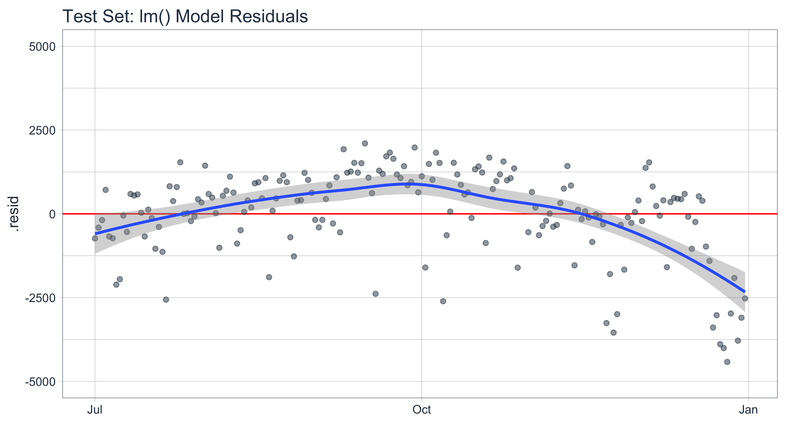
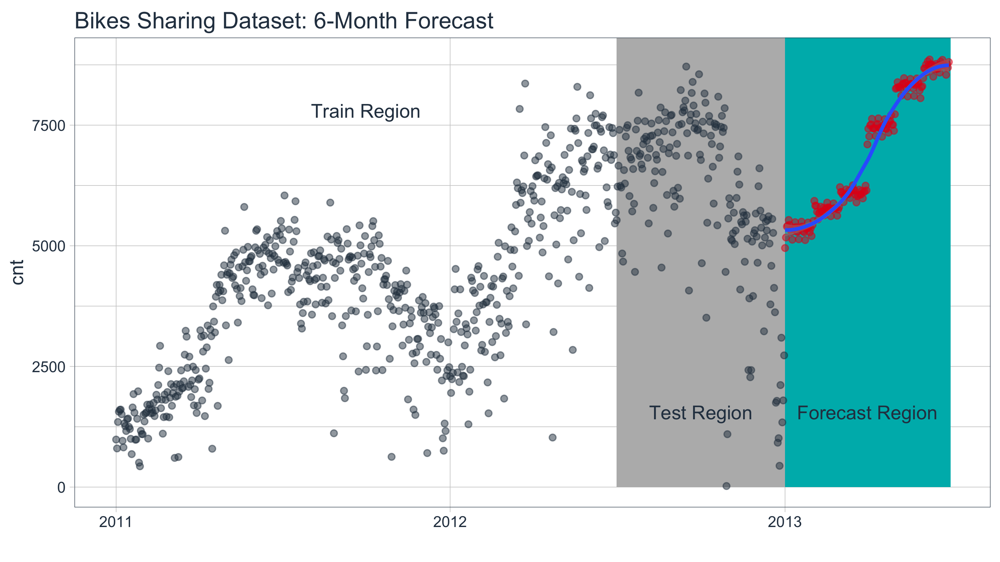
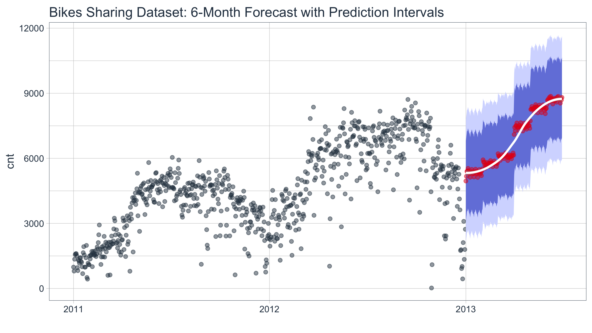

Forecasting Using a Time Series Signature with timetk
Matt Dancho
2017-07-27
A collection of tools for working with time series in R
The time series signature is a collection of useful features that describe the time series index of a time-based data set. It contains a wealth of features that can be used to forecast time series that contain patterns. In this vignette, the user will learn methods to implement machine learning to predict future outcomes in a time-based data set. The vignette example uses a well known time series dataset, the Bike Sharing Dataset, from the UCI Machine Learning Repository. The vignette follows an example where we’ll use timetk to build a basic Machine Learning model to predict future values using the time series signature. The objective is to build a model and predict the next six months of Bike Sharing daily counts.
Prerequisites
Before we get started, load the following packages.
library(tidyquant)
library(timetk)
library(broom)Data
We’ll be using the Bike Sharing Dataset from the UCI Machine Learning Repository. Download the data and select the “day.csv” file which is aggregated to daily periodicity.
Source: Fanaee-T, Hadi, and Gama, Joao, ‘Event labeling combining ensemble detectors and background knowledge’, Progress in Artificial Intelligence (2013): pp. 1-15, Springer Berlin Heidelberg
# Read data
bikes <- read_csv("day.csv")
# Select date and count
bikes <- bikes %>%
select(dteday, cnt) %>%
rename(date = dteday)A visualization will help understand how we plan to tackle the problem of forecasting the data. We’ll split the data into two regions: a training region and a testing region.
# Visualize data and training/testing regions
bikes %>%
ggplot(aes(x = date, y = cnt)) +
geom_rect(xmin = as.numeric(ymd("2012-07-01")),
xmax = as.numeric(ymd("2013-01-01")),
ymin = 0, ymax = 10000,
fill = palette_light()[[4]], alpha = 0.01) +
annotate("text", x = ymd("2011-10-01"), y = 7800,
color = palette_light()[[1]], label = "Train Region") +
annotate("text", x = ymd("2012-10-01"), y = 1550,
color = palette_light()[[1]], label = "Test Region") +
geom_point(alpha = 0.5, color = palette_light()[[1]]) +
labs(title = "Bikes Sharing Dataset: Daily Scale", x = "") +
theme_tq()
Split the data into train and test sets at “2012-07-01”.
# Split into training and test sets
train <- bikes %>%
filter(date < ymd("2012-07-01"))
test <- bikes %>%
filter(date >= ymd("2012-07-01"))Modeling
Start with the training set, which has the “date” and “cnt” columns.
# Training set
train## # A tibble: 547 x 2
## date cnt
## <date> <int>
## 1 2011-01-01 985
## 2 2011-01-02 801
## 3 2011-01-03 1349
## 4 2011-01-04 1562
## 5 2011-01-05 1600
## 6 2011-01-06 1606
## 7 2011-01-07 1510
## 8 2011-01-08 959
## 9 2011-01-09 822
## 10 2011-01-10 1321
## # ... with 537 more rowsThe first step is to add the time series signature to the training set, which will be used this to learn the patterns. The most efficient method is using tk_augment_timeseries_signature(), which adds the columns we need as additional columns.
# Add time series signature
train_augmented <- train %>%
tk_augment_timeseries_signature()
train_augmented## # A tibble: 547 x 30
## date cnt index.num diff year year.iso half quarter month
## <date> <int> <int> <int> <int> <int> <int> <int> <int>
## 1 2011-01-01 985 1293840000 NA 2011 2010 1 1 1
## 2 2011-01-02 801 1293926400 86400 2011 2010 1 1 1
## 3 2011-01-03 1349 1294012800 86400 2011 2011 1 1 1
## 4 2011-01-04 1562 1294099200 86400 2011 2011 1 1 1
## 5 2011-01-05 1600 1294185600 86400 2011 2011 1 1 1
## 6 2011-01-06 1606 1294272000 86400 2011 2011 1 1 1
## 7 2011-01-07 1510 1294358400 86400 2011 2011 1 1 1
## 8 2011-01-08 959 1294444800 86400 2011 2011 1 1 1
## 9 2011-01-09 822 1294531200 86400 2011 2011 1 1 1
## 10 2011-01-10 1321 1294617600 86400 2011 2011 1 1 1
## # ... with 537 more rows, and 21 more variables: month.xts <int>,
## # month.lbl <ord>, day <int>, hour <int>, minute <int>, second <int>,
## # hour12 <int>, am.pm <int>, wday <int>, wday.xts <int>, wday.lbl <ord>,
## # mday <int>, qday <int>, yday <int>, mweek <int>, week <int>,
## # week.iso <int>, week2 <int>, week3 <int>, week4 <int>, mday7 <int>Now that we have a number of fields that can be used for training, we can use these for modeling. In practice, you will want to go through the process of pre-processing the data, centering and scaling if necessary, making dummy variables, removing correlated variables that are present, examining interactions, etc. For brevity, we do not do this here.
# Model using the augmented features
fit_lm <- lm(cnt ~ ., data = train_augmented)We can examine the model residuals to see if there is any significant pattern remaining using augment() from the broom package.
# Visualize the residuals of training set
fit_lm %>%
augment() %>%
ggplot(aes(x = date, y = .resid)) +
geom_hline(yintercept = 0, color = "red") +
geom_point(color = palette_light()[[1]], alpha = 0.5) +
theme_tq() +
labs(title = "Training Set: lm() Model Residuals", x = "") +
scale_y_continuous(limits = c(-5000, 5000))
We can also get a quick idea of the overall error of the model on the training set. Note that what we really care about is the error on the test set, as this is a much better predictor of future model performance.
# RMSE
sqrt(mean(fit_lm$residuals^2))## [1] 860.2119Test Validation
With a suitable model (low residual error and random residuals) we can forecast using the “test” set for validation purposes.
test## # A tibble: 184 x 2
## date cnt
## <date> <int>
## 1 2012-07-01 5531
## 2 2012-07-02 6227
## 3 2012-07-03 6660
## 4 2012-07-04 7403
## 5 2012-07-05 6241
## 6 2012-07-06 6207
## 7 2012-07-07 4840
## 8 2012-07-08 4672
## 9 2012-07-09 6569
## 10 2012-07-10 6290
## # ... with 174 more rowsWe need to again augment the time series signature to the test set.
test_augmented <- test %>%
tk_augment_timeseries_signature()
test_augmented## # A tibble: 184 x 30
## date cnt index.num diff year year.iso half quarter month
## <date> <int> <int> <int> <int> <int> <int> <int> <int>
## 1 2012-07-01 5531 1341100800 NA 2012 2012 2 3 7
## 2 2012-07-02 6227 1341187200 86400 2012 2012 2 3 7
## 3 2012-07-03 6660 1341273600 86400 2012 2012 2 3 7
## 4 2012-07-04 7403 1341360000 86400 2012 2012 2 3 7
## 5 2012-07-05 6241 1341446400 86400 2012 2012 2 3 7
## 6 2012-07-06 6207 1341532800 86400 2012 2012 2 3 7
## 7 2012-07-07 4840 1341619200 86400 2012 2012 2 3 7
## 8 2012-07-08 4672 1341705600 86400 2012 2012 2 3 7
## 9 2012-07-09 6569 1341792000 86400 2012 2012 2 3 7
## 10 2012-07-10 6290 1341878400 86400 2012 2012 2 3 7
## # ... with 174 more rows, and 21 more variables: month.xts <int>,
## # month.lbl <ord>, day <int>, hour <int>, minute <int>, second <int>,
## # hour12 <int>, am.pm <int>, wday <int>, wday.xts <int>, wday.lbl <ord>,
## # mday <int>, qday <int>, yday <int>, mweek <int>, week <int>,
## # week.iso <int>, week2 <int>, week3 <int>, week4 <int>, mday7 <int>Next, use predict() to apply the model to the test set.
yhat_test <- predict(fit_lm, newdata = test_augmented)Add the predictions (use add_column for numeric vectors) to the test set for comparison. Additionally, we can add the residuals using mutate(), which enables performing calculations between columns of a data frame.
pred_test <- test %>%
add_column(yhat = yhat_test) %>%
mutate(.resid = cnt - yhat)
pred_test## # A tibble: 184 x 4
## date cnt yhat .resid
## <date> <int> <dbl> <dbl>
## 1 2012-07-01 5531 6264.223 -733.22284
## 2 2012-07-02 6227 6638.720 -411.72045
## 3 2012-07-03 6660 6846.848 -186.84846
## 4 2012-07-04 7403 6688.552 714.44821
## 5 2012-07-05 6241 6915.828 -674.82813
## 6 2012-07-06 6207 6937.066 -730.06598
## 7 2012-07-07 4840 6953.464 -2113.46428
## 8 2012-07-08 4672 6623.205 -1951.20517
## 9 2012-07-09 6569 6621.562 -52.56221
## 10 2012-07-10 6290 6829.690 -539.69023
## # ... with 174 more rowsVisualize the results using ggplot().
ggplot(aes(x = date), data = bikes) +
geom_rect(xmin = as.numeric(ymd("2012-07-01")),
xmax = as.numeric(ymd("2013-01-01")),
ymin = 0, ymax = 10000,
fill = palette_light()[[4]], alpha = 0.01) +
annotate("text", x = ymd("2011-10-01"), y = 7800,
color = palette_light()[[1]], label = "Train Region") +
annotate("text", x = ymd("2012-10-01"), y = 1550,
color = palette_light()[[1]], label = "Test Region") +
geom_point(aes(x = date, y = cnt), data = train, alpha = 0.5, color = palette_light()[[1]]) +
geom_point(aes(x = date, y = cnt), data = pred_test, alpha = 0.5, color = palette_light()[[1]]) +
geom_point(aes(x = date, y = yhat), data = pred_test, alpha = 0.5, color = palette_light()[[2]]) +
theme_tq() 
Test Accuracy
The forecast accuracy can be evaluated on the test set using residual diagnostics and forecast accuracy measures.
# Calculating forecast error
test_residuals <- pred_test$.resid
pct_err <- test_residuals/pred_test$cnt * 100 # Percentage error
me <- mean(test_residuals, na.rm=TRUE)
rmse <- mean(test_residuals^2, na.rm=TRUE)^0.5
mae <- mean(abs(test_residuals), na.rm=TRUE)
mape <- mean(abs(pct_err), na.rm=TRUE)
mpe <- mean(pct_err, na.rm=TRUE)
error_tbl <- tibble(me, rmse, mae, mape, mpe)
error_tbl## # A tibble: 1 x 5
## me rmse mae mape mpe
## <dbl> <dbl> <dbl> <dbl> <dbl>
## 1 -46.53047 1440.099 1047.875 182.3272 -168.681Next we can visualize the residuals of the test set. The residuals of the model aren’t perfect, but we can work with it. The residuals show that the model predicts low in October and high in December.
ggplot(aes(x = date, y = .resid), data = pred_test) +
geom_hline(yintercept = 0, color = "red") +
geom_point(color = palette_light()[[1]], alpha = 0.5) +
geom_smooth() +
theme_tq() +
labs(title = "Test Set: lm() Model Residuals", x = "") +
scale_y_continuous(limits = c(-5000, 5000))
At this point you might go back to the model and try tweaking features using interactions or polynomial terms, adding other features that may be known in the future (e.g. temperature of day can be forecasted relatively accurately within 7 days), or try a completely different modeling technique with the hope of better predictions on the test set. Once you feel that your model is optimized, move on the final step of forecasting.
Forecasting
Let’s use our model to predict What are the expected future values for the next six months. The first step is to create the date sequence. Let’s use tk_get_timeseries_summary() to review the summary of the dates from the original dataset, “bikes”.
# Extract bikes index
idx <- bikes %>%
tk_index()
# Get time series summary from index
bikes_summary <- idx %>%
tk_get_timeseries_summary()The first six parameters are general summary information.
bikes_summary[1:6]## # A tibble: 1 x 6
## n.obs start end units scale tzone
## <int> <date> <date> <chr> <chr> <chr>
## 1 731 2011-01-01 2012-12-31 days day UTCThe second six parameters are the periodicity information.
bikes_summary[7:12]## # A tibble: 1 x 6
## diff.minimum diff.q1 diff.median diff.mean diff.q3 diff.maximum
## <dbl> <dbl> <dbl> <dbl> <dbl> <dbl>
## 1 86400 86400 86400 86400 86400 86400From the summary, we know that the data is 100% regular because the median and mean differences are 86400 seconds or 1 day. We don’t need to do any special inspections when we use tk_make_future_timeseries(). If the data was irregular, meaning weekends or holidays were excluded, you’d want to account for this. Otherwise your forecast would be inaccurate.
idx_future <- idx %>%
tk_make_future_timeseries(n_future = 180)To make the prediction, we need to use the future index to get the time series signature (tk_get_timeseries_signature()). Make sure to rename the column “index” to “date” so it matches the column names of the original data.
data_future <- idx_future %>%
tk_get_timeseries_signature() %>%
rename(date = index)Make the prediction.
pred_future <- predict(fit_lm, newdata = data_future)Build the future data frame.
bikes_future <- data_future %>%
select(date) %>%
add_column(cnt = pred_future)Visualize the forecast.
bikes %>%
ggplot(aes(x = date, y = cnt)) +
geom_rect(xmin = as.numeric(ymd("2012-07-01")),
xmax = as.numeric(ymd("2013-01-01")),
ymin = 0, ymax = 10000,
fill = palette_light()[[4]], alpha = 0.01) +
geom_rect(xmin = as.numeric(ymd("2013-01-01")),
xmax = as.numeric(ymd("2013-07-01")),
ymin = 0, ymax = 10000,
fill = palette_light()[[3]], alpha = 0.01) +
annotate("text", x = ymd("2011-10-01"), y = 7800,
color = palette_light()[[1]], label = "Train Region") +
annotate("text", x = ymd("2012-10-01"), y = 1550,
color = palette_light()[[1]], label = "Test Region") +
annotate("text", x = ymd("2013-4-01"), y = 1550,
color = palette_light()[[1]], label = "Forecast Region") +
geom_point(alpha = 0.5, color = palette_light()[[1]]) +
geom_point(aes(x = date, y = cnt), data = bikes_future,
alpha = 0.5, color = palette_light()[[2]]) +
geom_smooth(aes(x = date, y = cnt), data = bikes_future,
method = 'loess') +
labs(title = "Bikes Sharing Dataset: 6-Month Forecast", x = "") +
theme_tq()
Forecast Error
A forecast is never perfect. We need prediction intervals to account for the variance from the model predictions to the actual data. There’s a number of methods to achieve this. We’ll follow the prediction interval methodology from Forecasting: Principles and Practice.
# Calculate standard deviation of residuals
test_resid_sd <- sd(test_residuals)
bikes_future <- bikes_future %>%
mutate(
lo.95 = cnt - 1.96 * test_resid_sd,
lo.80 = cnt - 1.28 * test_resid_sd,
hi.80 = cnt + 1.28 * test_resid_sd,
hi.95 = cnt + 1.96 * test_resid_sd
)Now, plotting the forecast with the prediction intervals.
bikes %>%
ggplot(aes(x = date, y = cnt)) +
geom_point(alpha = 0.5, color = palette_light()[[1]]) +
geom_ribbon(aes(ymin = lo.95, ymax = hi.95), data = bikes_future,
fill = "#D5DBFF", color = NA, size = 0) +
geom_ribbon(aes(ymin = lo.80, ymax = hi.80, fill = key), data = bikes_future,
fill = "#596DD5", color = NA, size = 0, alpha = 0.8) +
geom_point(aes(x = date, y = cnt), data = bikes_future,
alpha = 0.5, color = palette_light()[[2]]) +
geom_smooth(aes(x = date, y = cnt), data = bikes_future,
method = 'loess', color = "white") +
labs(title = "Bikes Sharing Dataset: 6-Month Forecast with Prediction Intervals", x = "") +
theme_tq()
Parting Thoughts
Forecasting using the time series signature can be very accurate especially when time-based patterns are present in the underlying data. As with most machine learning applications, the prediction is only as good as the patterns in the data. Forecasting using this approach may not be suitable when patterns are not present or when the future is highly uncertain (i.e. past is not a suitable predictor of future performance). However, in may situations the time series signature can provide an accurate forecast.
One benefit to the machine learning approach that was not covered in this vignette but is an significant advantage is that other features (including non-time-based) can be included in the analysis if the values are present in the training and test sets and can be determined with some level of accuracy in the future. For example, one can expect that experts in Bike Sharing analytics have access to historical temperature and weather patterns, wind speeds, and so on that could have a significant affect on bicycle sharing. The beauty of this method is these features can easily be incorporated into the model and prediction.
Last, a few points on the modeling process. Important modeling steps such as pre-processing data, removing correlated features, and so on where not addressed or included in this vignette. The astute modeler would certainly review the data and processing accordingly to achieve an optimal model.